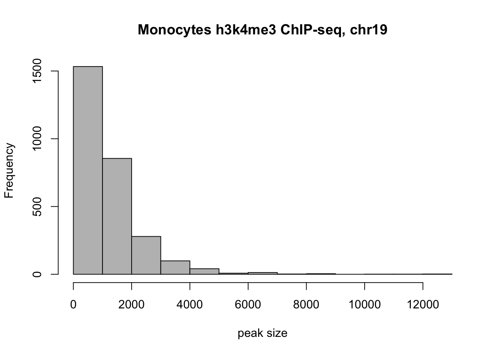
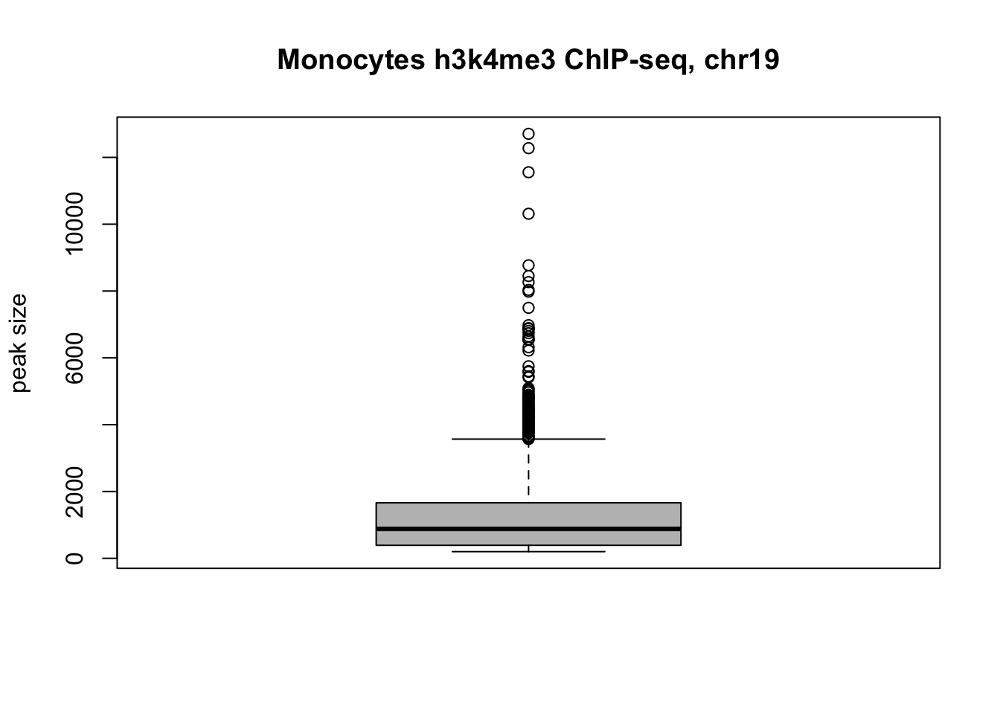
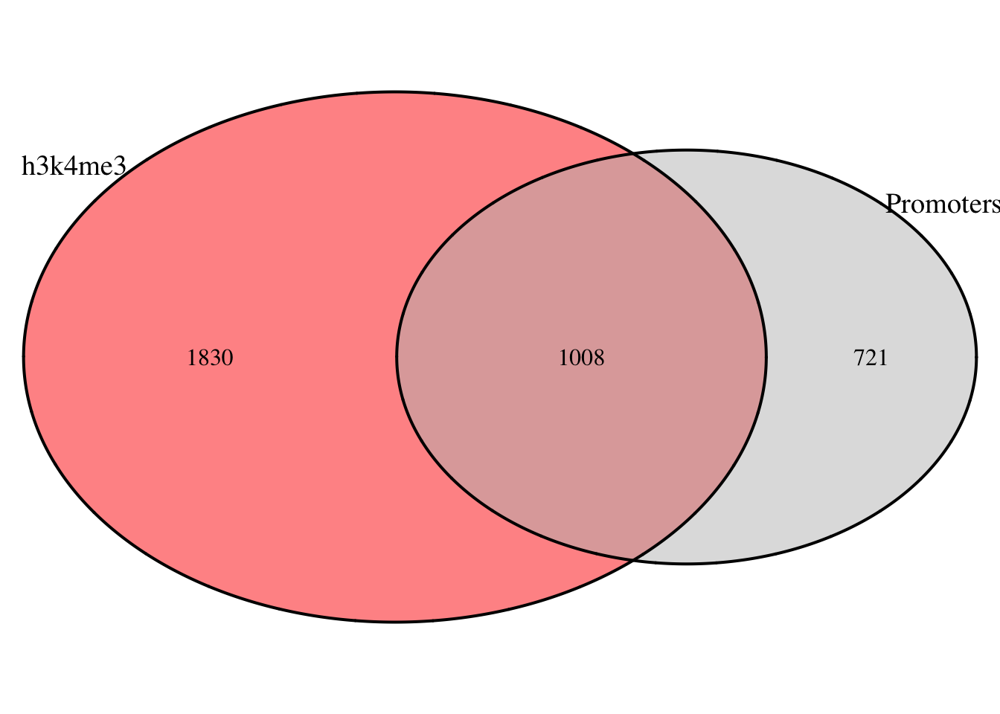
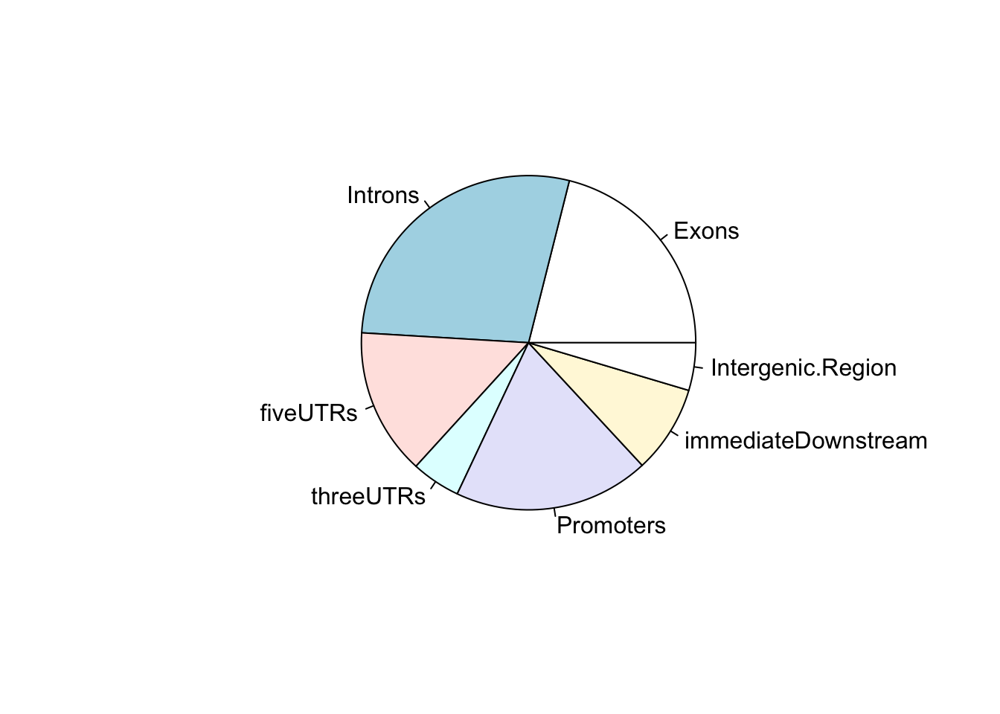
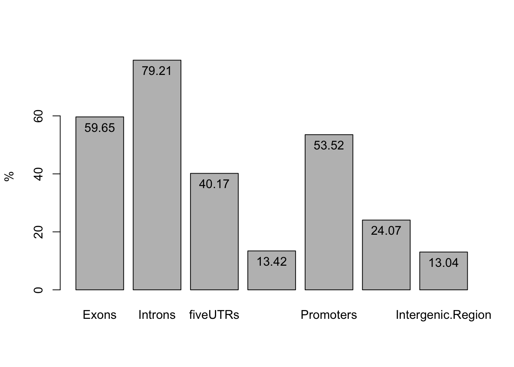
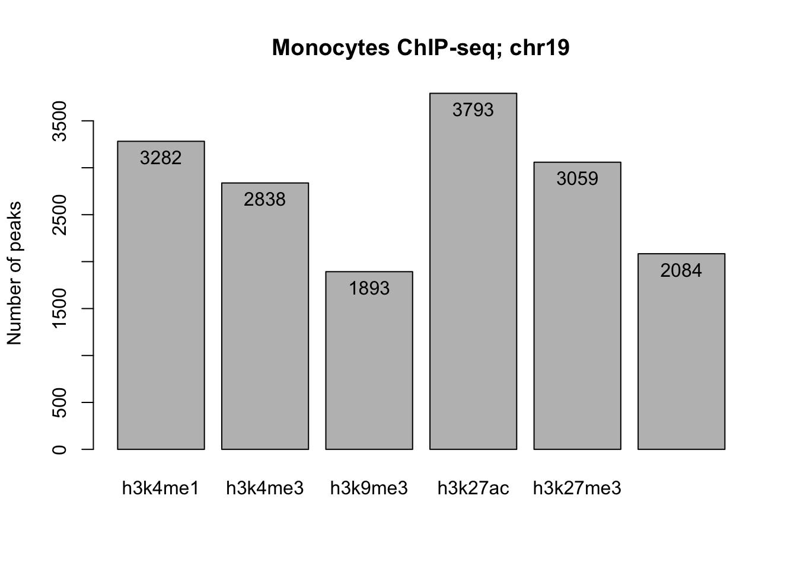

2. Peaks in r shortened
focus: genomic ranges, overlap functions, nearest functions.
2.1 Introduction
In week 1 we discussed the major steps imvolved in obtaining genomics data, from experiment to raw data to normalized signal and peaks. We examined histone PTM ChIP-, DNaseI-, and RNA-seq data of monocytes in the UCSC genome browser and searched for regions with increased signal, peaks. We looked at the position of these peaks in the chromosome and with respect to genes as well as the co-occurence of different marks.
These observations showed you that some marks are associated with particular functional elements, as was also discussed in class (eg active enhancer, active promoter, silenced domains).
This week and next week we will put numbers to these observations and perform computational analyses to answer common questions including: “How many peaks do I have?”, “Is this mark statistically enriched in a particular genomic element?”, “Which and how often do marks co-occur?”,“The expression of which gene could be affected by this mark?”, and “What is the signal of the mark around a particular element of interest like the TSS?”
2.1.1 Learning Objectives
At the end of week 2 you are able to:
- Create
GRangesandGRangesListobjects.
- Import ChIP-seq peaks into a
GRangesobject in r.
- Apply common
baseandplyrangesfunctions to summarizeGRangesobjects.
- Detect and count overlap between two
GRangesobjects using thefindOverlaps()function from theGenomicRangespackage.
- Visualize the number of overlaps in a vennDiagram using the
VennDiagrampackage.
- Visualize the number of overlaps with bar- and pieplots.
- Statistically test for enrichment of histone marks in a particular genomic region.
- Identify the nearest TSS to a histone ChIP-seq peak using the
distanceToNearest()function from theGenomicRangespackage.
- Identify the genes that are associated with these TSSs.
These refer to global learning objectives #4-#7.
TEASER… let’s look at some of the plots you will make.
2.2 Introducing GenomicRanges
2.2.1 Background Bioconductor
Bioconductor is a special repository of packages for the analysis of high throughput genomic data in r. Packages are often heavily dependend on each other and regular releases and a special installer ensure that you install package version that can work together. Usually you would use the biocManager::install() command to install these packages. But in this tutorial, all required packages are already installed.
Bioconductor packages that we will be using include:
| Package | Purpose |
|---|---|
| GenomicRanges | Provides the GRanges data structures to store and handle genomic intervals. |
| plyranges | dplyr-like interface for interacting and manipulating Ranges data structures. |
| GenomicFeatures | Functions to retrieve and manage genomic features from database packages. |
| rtracklayer | Provides functions to import and work with annotation files with various formats (GFF, BED, bedGraph, BED15, WIG, BigWig and 2bit). |
TxDb packages |
Provide an R representation of gene models, each genome has a separate package. |
OrgDb packages |
Contain mappings between a unique gene identifier and other kinds of identifiers for a certain genome (eg from Entrez gene identifier to Gene Symbol) |
Bioconductor packages can use data structures different from vectors,matrices or data.frames. The GRanges data structure provided by the GenomicRanges package is an example and is used by many. We will come to those shortly.
These “Bioconductor-specific-objects”, like GRanges, generally have their own set of functions or methods that you can explore using methods(class = "..."). To find out the class, use class(object_name).
Here’s a list of basic functions to explore objects and/or call the help on packages or functions:
- Use
class()to found out what kind of data structure you are dealing with
- Use
show()orprint()to have r print a summary of your data
- use
methods(class = "...")to get a list of (default) methods or functions you can use to extract and manipulate the data, also called assessor functions or getter and setter functions
- use
help(package = "[packageName]")to display the help page
2.2.2 GenomicRanges: Constructing GRanges objects
You are already familiar with the data structures vector, matrix, data.frame and lists in R. In genomics we often work with interval data. Think of peaks, genes, exons, … any genomic region reported with tge genomic coordinates :chr, start, and end.
Storing these in a data.frame is possible but not very efficient. E.g. a simple manipulation such as shifting all reported intervals 2 bp to the right, requires you to manipulate 2 columns at the same time.
Interval data can be more efficiently handled with the IRanges package which works with a data structure especially developed for ranges of integers: IRanges objects.
To construct an IRanges object we require at least two of the following three values: a starting coordinate, a finishing coordinate or the width of the interval.
Here we create IRranges object ir with three intervals, starting at positions 3, 5 and 17, and ending at positions 10, 20 and 30:
## IRanges object with 3 ranges and 0 metadata columns:
## start end width
## <integer> <integer> <integer>
## [1] 3 10 8
## [2] 5 20 16
## [3] 17 30 14Depicting ir visually we see blocks representing the intervals along the horizontal axis:

The GRanges objects of the GenomicRanges package are very similar but require a additional sequence name (in other words a chromosome) for every interval.
Here we reate a GRanges object using ir and call for it’s class and summary (as this prints 6 lines by default, the whole object is printed in this case):
# create gr object:
gr <- GRanges(seqnames = c("chr1", "chr1", "chr2"), ranges=ir)
# find out the class:
class(gr)## [1] "GRanges"
## attr(,"package")
## [1] "GenomicRanges"## GRanges object with 3 ranges and 0 metadata columns:
## seqnames ranges strand
## <Rle> <IRanges> <Rle>
## [1] chr1 3-10 *
## [2] chr1 5-20 *
## [3] chr2 17-30 *
## -------
## seqinfo: 2 sequences from an unspecified genome; no seqlengths
The strand column holds *, meaning the intervals are unstranded.
Here we create gr again but define the strand for every interval with strand =
# create gr object with strandinfo:
gr <- GRanges(seqnames = c("chr1", "chr1", "chr2"),
ranges=ir,
strand = c("+", "-", "-"))
gr## GRanges object with 3 ranges and 0 metadata columns:
## seqnames ranges strand
## <Rle> <IRanges> <Rle>
## [1] chr1 3-10 +
## [2] chr1 5-20 -
## [3] chr2 17-30 -
## -------
## seqinfo: 2 sequences from an unspecified genome; no seqlengths
We can add scores and names to these intervals with score(object_name) <- and names(object_name) <-. The names will replace the row idnentifiers. Additional custom columns can be defined with the $-sign.
Here we add names, scores and a gc% to each interval:
set.seed(1234) # set.seed to ensure that with the random number generation, we each time generate the same sequence of numbers
# add names to `my_gr`
names(gr) <- paste("peak", LETTERS[1:3], sep = "_")
# add a custom score
score(gr) <- round(runif(3, 0, 106), digits = 3)
# add custom GC content
gr$gc <- round(runif(3, 0.35, 0.60), digits = 3)
# print the result
print(gr)## GRanges object with 3 ranges and 2 metadata columns:
## seqnames ranges strand | score gc
## <Rle> <IRanges> <Rle> | <numeric> <numeric>
## peak_A chr1 3-10 + | 12.053 0.506
## peak_B chr1 5-20 - | 65.964 0.565
## peak_C chr2 17-30 - | 64.583 0.510
## -------
## seqinfo: 2 sequences from an unspecified genome; no seqlengths
GRanges objects follow the tidy data principle: each row of a Ranges object corresponds to an interval, and each column will represent a variable about that interval, and generally each object will represent a single unit of an observation (like gene annotations).
Notice that the names replace the rowIDs and that this object now holds 2 metadata columns besides the genomic coordinates. Metadata is data about the data:
| Genomic coordinates | Metadata columns |
|---|---|
Printed on the left-hand side of the | |
Printed on the right-hand side of the | |
Extract using granges(object_name) |
Extract as DataFrame with mcols(object_name) or object_name$column_name for a specific column |
Columns are restricted to seqnames, ranges and strand |
Almost anything can be stored in the metadata, we defined score and GC-content here |
Information about the genome and sequences is stored in seqinfo. This currently tells us that the intervals are from 2 sequences of a unknown genome. Genome information can be appended using seqinfo(my_gr) <- Seqinfo(genome="hg38"). This automatically loads the sequence information specified by genome by querying the UCSC database. We skip this step to limit the size of the object.
Exercise 1 - Finish the following code, creating
my_gr2with:
- Invervals A-E located on resp. chr1, chr2, chr3, chr4 and chr5 (one interval per chromosome);
- from A to E, starts are respectively at position
3,5,13,18, and20;
- and a
widthof5,7,6,9and11bp;
- the intervals A, B and C on the minus strand, D and E on the plus strand;
- random scores in a variable
score;
- and a random GC% in the
GC-column.
- Then add names to each row with
names()
Finish by printing the summary ofmy_grusing theprint()function.
set.seed(1234) # set.seed to ensure that with the random number generation, we each time generate the same sequence of numbers.
# create GRanges object 'my_gr' intervals A-C:
my_gr <- ....(.. = c("..."),
.... = IRanges(start = c(..), ... = c(5, 7, 9, 11)),
.. = c("-", "-", ..)
.. = round(runif(5, 0, 106), digits = 3),
gc = round(runif(5, 0.35, 0.60), digits = 3)
)
# add names to `my_gr`
..(my_gr) <- paste("peak", LETTERS[1:5], sep = "_")
# print summary of my_gr
..(my_gr)set.seed(1234) # set.seed to ensure that with the random number generation, we each time generate the same sequence of numbers.
# create GRanges object 'my_gr' intervals A-C:
my_gr <- GRanges(seqnames = c("chr1", "chr2", "chr3", "chr4", "chr5"),
ranges = IRanges(start=c(3, 5, 13, 18, 20), width = c(5, 7, 9, 11)),
strand = c("-", "-", "-","+", "+"),
score = round(runif(5, 0, 106), digits = 3),
gc = round(runif(5, 0.35, 0.60), digits = 3)
)
# add names to `my_gr`
names(my_gr) <- paste("peak", LETTERS[1:5], sep = "_")
# print summary of my_gr
print(my_gr)## GRanges object with 5 ranges and 2 metadata columns:
## seqnames ranges strand | score gc
## <Rle> <IRanges> <Rle> | <numeric> <numeric>
## peak_A chr1 3-7 - | 12.053 0.510
## peak_B chr2 5-11 - | 65.964 0.352
## peak_C chr3 13-21 - | 64.583 0.408
## peak_D chr4 18-28 + | 66.078 0.517
## peak_E chr5 20-24 + | 91.257 0.479
## -------
## seqinfo: 5 sequences from an unspecified genome; no seqlengths2.3.2 Working with GRanges
Accessor functions extract components from the GRanges object.
start(),end(),width(),ranges()andstrand()accessors extract the respective elements from the genomic coordinates.
score()prints the scores stored in metadata.names()prints the rownames.
- Custom metadata columns can be accessed using the
$- sign.
Here’s a visual summary of a GRanges object called my_gr with the accessors to extract its content:

Additional common functions to summarize and view GRanges objects include:
length()prints the number of stored intervals.head(object_name, n = ...)andtail(object_name, n = ...)printnnumber of intervals in the head or tail of the object. Can be usefull for checking that the dataset is complete.
- GRanges behave like vectors of ranges and can be subsetted using
[subset range, metadata columns]. E.g.my_gr[3:5, "GC"]will print only rows 3 to 5 and of the metadata only theGC-column.
dplyr-related functions are available for GRanges through the plyranges package. (The dplyr package it self is not compatable with GRanges.) As the function names of dplyr and plyranges overlap, we sometimes use the formulation package::function to clarify to you the package we are using.
A brief reminder of common dplyr functions and examples of plyranges-relatives on GRanges objects:
| Function | Purpose | Example on GRanges |
|---|---|---|
select() |
subset variables (=columns) | select(my_gr, GC) |
group_by() |
group data into rows with the same value for the specified variable. | my_gr %>% group_by(strand). |
filter() |
subset observations (= rows) | filter(my_gr, GC < 0.4) or my_gr %>% group_by(strand) %>% filter(GC == max(GC)). |
summarize() |
Summarise variables, often per group | group_by(my_gr, strand) %>% summarize(n = n(), gc = max(GC)) |
We can also use the pipe operator %>% to combine functions in a workflow.
We will practice using these functions on real peak data, which we will import in the next section.
2.3 Peak files in R
2.3.1 Data import
Most genomic interval data comes in a tabular format that has the basic information about the location of the interval and some other information. Common file formats include BED, GFF or BigWig files. These can be imported with the base object_name <- read.table("location/of/file.bed") function and converted to a GRanges object using gr_object <- as(object_name, "GRanges").
A quicker method is to use the import() function from the rtracklayer package. This function parses the files directly into GRanges objects with genomic ranges and metadata.
You will import BED files with the genomic locations of the peaks from the histone ChIP-seq experiment in monocytes we looked at in week 1. On the BLUEPRINT methods page we can read that peak calling was performed with MACS2 software. We also note that for 4 ChIPs, the -broad option was included resulting in so-called broadPeak files. The others follow the narrowPeak file format. This is important because we need to specify this file format in our import() function.
| narrowPeak file | broadPeak file |
|---|---|
| H3K27ac | H3K27me3 |
| h3k4me3 | H3K36me3 |
| H3K9/14ac | H3K9me3 |
| H2A.Zac | H3K4me1 |
These two files are much alike (see MACS2 github). They hold the following information about the identified peaks:
| Column | Information | narrowPeak description | broadPeak description |
|---|---|---|---|
| 1. | chromosome name | same | same |
| 2. | peak start | same | same |
| 3. | peak end | same | same |
| 4. | peak name | same | same |
| 5. | score | -10log(qvalue) * 10, rounded down to integer value) | mean of -10log(qvalue) * 10 across all positions |
| 6. | strand | +, - or * for unstranded | same |
| 7. | fold_enrichment | at peak summit | mean across all positions |
| 8. | -log10(qvalue) (e.g.if qvalue = 1e-10, this value is 10) | at peak summit | mean across all positions |
| 9. | -log10(pvalue) | at peak summit | mean across all positions |
| 10. | relative summit | position relative to peak start | not reported |
We have restricted all peak files to chromosome 19 to limit their file size.
Exercise 2:
- Read in the following peak files wih the
import()function from thertracklayerpackage.
- Define the appropriate file format, i.e. “narrowPeak” or “broadPeak”.
# H3k4me1
mono_h3k4me1 <- rtracklayer::import("data/blueprint/bed/C000S5H2.ERX547981.H3K4me1.bwa.GRCh38.broad.20150527.chr19.bed", format = "...")
# h3k4me3
mono_h3k4me3 <- rtracklayer::...("data/blueprint/bed/C000S5H2.ERX547984.h3k4me3.bwa.GRCh38.20150527.chr19.bed", format = "...")
# H3K9me3
mono_h3k9me3 <- rtracklayer::...("data/blueprint/bed/C000S5H2.ERX547982.H3K9me3.bwa.GRCh38.broad.20150527.chr19.bed", format = "...")# H3k4me1
mono_h3k4me1 <- rtracklayer::import("data/blueprint/bed/C000S5H2.ERX547981.H3K4me1.bwa.GRCh38.broad.20150527.chr19.bed", format = "broadPeak")
# h3k4me3
mono_h3k4me3 <- rtracklayer::import("data/blueprint/bed/C000S5H2.ERX547984.h3k4me3.bwa.GRCh38.20150527.chr19.bed", format = "narrowPeak")
# H3K9me3
mono_h3k9me3 <- rtracklayer::import("data/blueprint/bed/C000S5H2.ERX547982.H3K9me3.bwa.GRCh38.broad.20150527.chr19.bed", format = "broadPeak")
Awesome! Let’s take a quick look at one of these files.
Exercise 3:
Print the head 2 lines ofmono_h3k4me3using the functionhead().
## GRanges object with 2 ranges and 6 metadata columns:
## seqnames ranges strand | name score
## <Rle> <IRanges> <Rle> | <character> <numeric>
## [1] chr19 245884-246269 * | 3337.macs2_peak_call_peak_22416 317
## [2] chr19 266835-267653 * | 3337.macs2_peak_call_peak_22417 1805
## signalValue pValue qValue peak
## <numeric> <numeric> <numeric> <integer>
## [1] 14.0559 33.902 31.7868 190
## [2] 50.0226 183.133 180.5450 544
## -------
## seqinfo: 1 sequence from an unspecified genome; no seqlengths
The original .BED files lacked column headers. The rtracklayer::import() function appendended variable names and converted the data to the data type (eg numeric, integer, character etc.) according to the file format we defined.
Let’s do some exploratory analyses on these data..
2.3.2 Exploratory analysis
We will use the functions described for GRanges objects in section 2.2.3 to mono_h3k4me3.
Exercise 4:
- Use the
length()function to determine the number of h3k4me3 peaks in monocytes.
- What is the distribution of peak sizes and scores? Use
summary(),width()andscore().
## [1] 2838## Min. 1st Qu. Median Mean 3rd Qu. Max.
## 200.0 389.2 879.5 1198.6 1661.2 12705.0## Min. 1st Qu. Median Mean 3rd Qu. Max.
## 15 84 374 1212 2415 52282.3.3 Exploratory plotting
Let’s plot some of the above generated outputs using base plotting functions.
Exercise 5:
Plot the h3k4me3 peaksizes as a histogram and as a boxplot using the basehist()andboxplot()functions.
# plot the distribution of peak sizes for h3k4me3 as histogram
..(..(mono_h3k4me3), main = "Monocytes h3k4me3 ChIP-seq, chr19", xlab = "peak size", col = "gray")# plot the distribution of peak sizes for h3k4me3 as histogram
hist(width(mono_h3k4me3), main = "Monocytes h3k4me3 ChIP-seq, chr19", xlab = "peak size", col = "gray")
# plot the same data as boxplot, ensue that "peak size" labels the right axis (x or y)
..(..., main = "Monocytes h3k4me3 ChIP-seq, chr19", ... = "peak size", col = "gray")# plot the same data as boxplot, ensue that "peak size" labels the right axis (x or y)
boxplot(width(mono_h3k4me3), main = "Monocytes h3k4me3 ChIP-seq, chr19", ylab = "peak size", col = "gray")
> Note: plotting with the ggplots packages is also possible, as long as we convert the data we are interested to data.frame objects by running for example: meta_h3k4me3 <- as.data.frame(mcols(mono_h3k4me3)).
Several peaks have a width of >10000 bp. You retrieve these peaks with: mono_h3k4me3[width(mono_h3k4me3)> 10000,] or using filter() from plyranges.
Exercise 6:
Use [ ]-subsetting andlength()to find the number of peaks with width > 10kb.
Exercise 7:
Filtermono_h3k4me3for peaks with width > 10kb usingfilter()fromplyranges
# filter mono_h3k4me3 for peaks with size above 10kb
mono_h3k4me3 %>% plyranges::filter(width > 10000)## GRanges object with 4 ranges and 6 metadata columns:
## seqnames ranges strand | name
## <Rle> <IRanges> <Rle> | <character>
## [1] chr19 4057708-4069982 * | 3337.macs2_peak_call_peak_22766
## [2] chr19 13094389-13105943 * | 3337.macs2_peak_call_peak_23309
## [3] chr19 35896740-35909444 * | 3337.macs2_peak_call_peak_24016
## [4] chr19 39404035-39414347 * | 3337.macs2_peak_call_peak_24149
## score signalValue pValue qValue peak
## <numeric> <numeric> <numeric> <numeric> <integer>
## [1] 4368 100.8720 441.685 436.885 8901
## [2] 3267 79.7881 330.122 326.784 8268
## [3] 3088 46.5275 312.010 308.813 11185
## [4] 4273 97.9021 431.897 427.309 4278
## -------
## seqinfo: 1 sequence from an unspecified genome; no seqlengthsExercise 8
Use theplyranges::filterand the UCSC genome browser to find the gene(s) whose promoter(s) is/are covered by the peak with the highest score.
hints:
1: condition on
score == max(score)
## GRanges object with 1 range and 6 metadata columns:
## seqnames ranges strand | name
## <Rle> <IRanges> <Rle> | <character>
## [1] chr19 15377793-15380841 * | 3337.macs2_peak_call_peak_23451
## score signalValue pValue qValue peak
## <numeric> <numeric> <numeric> <numeric> <integer>
## [1] 5228 116.995 530.186 522.803 1381
## -------
## seqinfo: 1 sequence from an unspecified genome; no seqlengthsquestion("The promoters of which gene(s) are covered by the h3k4me3 peak with the highest score"?,
answer("*AKAP8*", correct = T, message = "While this peak spans parts of both genes, it covers the promoter of *AKAP8* but the 3'UTR of *AKAP8L*." ),
answer("*AKAP8L*", message = "Incorrect. Be aware of the directionaility of this gene by looking at the arrowsheads in the introns."),
answer("Both", message = "Only one of the genes listed here. Look at the direction of transcription indicated by the arrowheads in the introns of the genes.")
)
Later on in this tutorial we will learn how to annotate peaks with the gene that they most likely control. First we will calculate the fraction of overlap among two GRanges objects.
## 2.4 Overlap analysis
### 2.4.1 Detect overlap with GenomicRanges
The GenomicRanges package has a family of functions to count and identify overlappig intervals in GRanges objects:
countOverlaps: countOverlaps(query, subject) returns a integer vector with the number of overlaps for each element in the query
subsetByOverlaps: subsetByOverlaps(query, subject) extracts the elements in the query that overlap with at least one element in the subject.
findOverlaps: findOverlaps(query, subject) returns a Hits object containing the index pairings for the overlapping elements.
- The columns of indices can be accessed through
queryHits(overlap_object)andsubjectHits(overlap_object).
- If a peak in one of the inputs overlaps with mutiple peaks in the other, its index will appear multiple times in the output.
### 2.4.2 Overlap promoters vs h3k4me3 peaks
We have used the package TxDb.Hsapiens.UCSC.hg38.knownGene to retrieve the genomic coordinates of all genes on human chromosome 19. This object, genes, thus contains all the coordinates of the outermost UTR boundaries and the Entrez gene identifier of each gene.
We define the promoter region as 1kb upstream and 200bp downstream the TSS as follows:
# identify TSS (in this case 1 per gene even though we know that genes have multiple TSSs)
tss <- resize(genes, width = 1, fix = "start")
# view TSS object
head(tss, n = 3)## GRanges object with 3 ranges and 1 metadata column:
## seqnames ranges strand | gene_id
## <Rle> <IRanges> <Rle> | <character>
## 1 chr19 58362751 - | 1
## 100049587 chr19 51646801 - | 100049587
## 100073347 chr19 56840866 + | 100073347
## -------
## seqinfo: 1 sequence from hg38 genome# consider 1kb upstream and 200bp downstream the TSS as promoter
promoters <- resize(tss, width = 1000, fix = "end")
promoters <- resize(promoters, width = 1200, fix = "start")
# show promoters object
head(promoters, n = 3)## GRanges object with 3 ranges and 1 metadata column:
## seqnames ranges strand | gene_id
## <Rle> <IRanges> <Rle> | <character>
## 1 chr19 58362551-58363750 - | 1
## 100049587 chr19 51646601-51647800 - | 100049587
## 100073347 chr19 56839867-56841066 + | 100073347
## -------
## seqinfo: 1 sequence from hg38 genome
We want to know how many of the promoters overlap with a h3k4me3 peak and vise versa.
Exercise 10:
UsefindOverlaps()to determine the overlap between (query)mono_h3k4me3and (subject)promoters.
# Find overlap between mono_h3k4me3 peaks and promoters
ovl <- ..(query = .., subject = ..)
# print the overlap output
show(..)# Find overlap between mono_h3k4me3 peaks and promoters
ovl <- findOverlaps(query = mono_h3k4me3, subject = promoters)
# print the overlap output
show(ovl)## Hits object with 1256 hits and 0 metadata columns:
## queryHits subjectHits
## <integer> <integer>
## [1] 3 1609
## [2] 5 1058
## [3] 6 407
## [4] 7 630
## [5] 8 630
## ... ... ...
## [1252] 2833 1642
## [1253] 2836 1341
## [1254] 2836 1416
## [1255] 2837 1341
## [1256] 2837 1416
## -------
## queryLength: 2838 / subjectLength: 1729
‘ovl’ gives you the indices of mono_h3k4me3 and promoters that overlap. If a peak or a promoter overlaps several times, each overlap will be reported on a new row.
Exercise 11:
How many of the promoters are part of the overlap? And how many of the h3k4me3 peaks?
- Use
queryHits()andsubjectHits()to extract the indices of overlapping peaks and promoters respectively.
- Use
unique()to minimize this output to unique peaks.
- Use
length()to count the number of unique intervals of the query and the subject.
## [1] 1008## [1] 0.3551797## [1] 0.6495084
Let’s plot this overlap in a venn diagram with the plot.pairwise.venn() function of the VennDiagram package.
- Use the minimum of the two ‘unique counts’ as the number of ‘common peaks’ for our venn diagram.
# Identify the minimum of the two numbers of unique intervals among h3k4me3 peaks and promoters
common_intervals <- min(c(length(unique(queryHits(ovl))), length(unique(subjectHits(ovl)))))
# call a new plotting area
grid.newpage()
# Plot the overlap in a venn diagram
draw.pairwise.venn(
area1=length(mono_h3k4me3),
area2=length(promoters),
cross.area=common_intervals,
category=c("h3k4me3", "Promoters"),
fill=c("red", "gray"),
cat.cex=1.2)
## (polygon[GRID.polygon.11], polygon[GRID.polygon.12], polygon[GRID.polygon.13], polygon[GRID.polygon.14], text[GRID.text.15], text[GRID.text.16], text[GRID.text.17], text[GRID.text.18], text[GRID.text.19])
Is there a significant enrichment of h3k4me3 in promoters?
To answer this question, we compare the fraction of promoters with a h3k4me3 peak with the chromosome 19-wide fraction of promoters.
If h3k4me3 is not enriched at promoters, we would expect that the fraction of promoters with a h3k4me3 peak is in the same range as the fraction of promoters on chromosome 19. (=This is our null hypothesis of no enrichment.
To calculate the chromosome 19-wide fraction of promoters we identify the total number of bps covered by a promoter. As some promoters may overlap we first reduce promoters to non-overlapping intervals. Visually, reduce() works like this: 
# total number of bps covered by promoters
total_bp_prom <- sum(width(GenomicRanges::reduce(promoters)))
# chromosome 19-wide fraction of promoters
(prom_fraction_chr19 <- total_bp_prom/seqlengths(promoters)["chr19"])## chr19
## 0.03404707
Promoters make up 3.4% of this chromosome but nearly 65% of all promoters overlap with h3k4me3 peaks. This looks like a strong enrichment. We can test whether the observed fraction is indeed larger than expected with a binomial test, in r we use the function binom.test(x, n, p) for this:
x= number of successes, number of promters with h3k4me3 peak
n= total number of trails, total number of h3k4me3 peaks
p= expected probability of success, in this case the fraction of promoters in chromosome 19
Background: The binomial test is run when an experiment has two possible outcomes (i.e. success/failure) and you have an idea about what the probability of success is. Success in this case is overlap and our expectation is that 3.4% of the cases show overlap. The test calculates the probability of getting a desired outcome with a specific sample size
n.
Exercise 12
Use a binomial test to test for enrichment of h3k4me3 at promoters.
- Use the function
binom.test(x, n, p, alternative = "greater")to call the test
- We set
alternative = "greater"because we test for enrichment and our alternative hypothesis is that the true probability is larger than the expected probability.
# binomial test for enrichment of h3k4me3 peaks in promoters:
binom.test(length(unique(..(ovl))), length(..), prom_fraction_chr19, alternative = "greater" )##
## Exact binomial test
##
## data: length(unique(subjectHits(ovl))) and length(mono_h3k4me3)
## number of successes = 1123, number of trials = 2838, p-value < 2.2e-16
## alternative hypothesis: true probability of success is greater than 0.03404707
## 95 percent confidence interval:
## 0.3805112 1.0000000
## sample estimates:
## probability of success
## 0.3957012
The binomial test shows a p-value < 2.2e-16 and a confidence interval that excludes the expected 0.034. We therefore reject the H0 of no enrichment.
In the genome browser we also observed H3K27ac often at promoters. Is this mark enriched in these regions?
Exercise 13
Use a binomial test to test for enrichment of H3K27ac at promoters.
- First, use findOverlaps to detect the overlap between intervals reported in mono_h3k37 and promoters
- Use the function
binom.test(x, n, p, alternative = "greater")to call the test
- We set
alternative = "greater"because we test for enrichment and our alternative hypothesis is that the true probability is larger than the expected probability.
# binomial test for enrichment of H3K27ac peaks in promoters
# `prom_fraction_chr19` holds the fractio of promoters in chromosome 19
..(..(..(..(..))), ..(..), prom_fraction_chr19, alternative = "greater" )# binomial test for enrichment of H3K27ac peaks in promoters:
binom.test(length(unique(subjectHits(ovl2))), length(mono_h3k27ac), prom_fraction_chr19, alternative = "greater" )##
## Exact binomial test
##
## data: length(unique(subjectHits(ovl2))) and length(mono_h3k27ac)
## number of successes = 865, number of trials = 3793, p-value < 2.2e-16
## alternative hypothesis: true probability of success is greater than 0.03404707
## 95 percent confidence interval:
## 0.2168716 1.0000000
## sample estimates:
## probability of success
## 0.2280517
>Exercise 14:
Do you conclude that H3K27ac is enriched at promoters?
2.4.4 Overlap with genomic features
remove?
To understand the function of a ChIPped mark or factor we often want to know to which genes and genomic features it binds.
We will use a TxDb objects. Such an object is an R interface to prefabricated databases contained by specific annotation packages. The package TxDb.Hsapiens.UCSC.hg38.knownGene includes all human genes and transcripts from UCSC with coordinates for the hg18 genome assembly.
# we need the `TxDb` object and limits its active chromosomes to chromosome 19
library(TxDb.Hsapiens.UCSC.hg38.knownGene)
txdb <- TxDb.Hsapiens.UCSC.hg38.knownGene
seqlevels(txdb) <- "chr19"
# laod package to annotate peaks with genes
require(ChIPpeakAnno)
# calculate the overlap with features
h3k4me3_features <- assignChromosomeRegion(mono_h3k4me3, TxDb=txdb, nucleotideLevel=FALSE)
# show the results
h3k4me3_features## $percentage
## subjectHits
## Exons Introns fiveUTRs threeUTRs
## 59.65469 79.21071 40.16913 13.42495
## Promoters immediateDownstream Intergenic.Region
## 53.52361 24.06624 13.03735
##
## $jaccard
## Exons Introns fiveUTRs threeUTRs
## 0.05531595 0.12477798 0.19041256 0.03819932
## Promoters immediateDownstream Intergenic.Region
## 0.18327703 0.05151607 0.13049339Exercise 13
Plot the percentage of features with the mark as barplot and as piechart
- Access the percent values in
h3k4me3_featuresusing the $ operator.
- For plotting use
pie()andbarplot().

# make barplot
bp <- ..(..$.., ylab="%")
# add percentages to the bars with text()
text(bp, h3k4me3_features$percentage, signif(h3k4me3_features$percentage, 4), pos=1, main = "Mono h3k4me3 in features")# make barplot
bp <- barplot(h3k4me3_features$percentage, ylab="%")
# add percentages to the bars with text()
text(bp, h3k4me3_features$percentage, signif(h3k4me3_features$percentage, 4), pos=1, main = "Mono h3k4me3 in features")
2.4.5 Overlap with GRangesList
remove?
So far we looked at h3k4me3 marking. How do the other marks overlap with genomic features? Instead of rerunning the above code for each mark individually, we combine the individual peak objects into a list of GRanges objects with the function GRangesList().
We have created a GRangesList mono_list by:
# make a list of your GRanges objects
mono_list <- GRangesList(mono_h3k4me1, mono_h3k4me3, mono_h3k9me3, mono_h3k27ac, mono_h3k27me3, mono_h3k36me3)
# add names to each element in the list
names(mono_list) <- c("h3k4me1", "h3k4me3", "h3k9me3", "h3k27ac", "h3k27me3", "h3k36me3")
# print the length of your list
length(mono_list)## [1] 6
The length function now applies to the list and not to the individual items any more.
We can access elements in the list using [[]] or $-sign.
- Use
[[]]and the index: eg.mono_list[[1]]will extract the first item in the list. - Use
[[]]and the name: egmono_list[["h3k36me3"]]will extract the item with this name.
- Use
$item_nameto extract the item with that name.
To calculate the length of individual items in the list use lapply(), which applies a function to each item in the list.
With the fuction lapply(list_object, function) we can apply or loop a function to each element in the list and returns the results as a list.
Here we apply length() to each item in mono_list
## $h3k4me1
## [1] 3282
##
## $h3k4me3
## [1] 2838
##
## $h3k9me3
## [1] 1893
##
## $h3k27ac
## [1] 3793
##
## $h3k27me3
## [1] 3059
##
## $h3k36me3
## [1] 2084
unlist() flattens the list to one object. Depending on the elements in the list this will return a vector, matrix or, if all elements have the same data structure and column names, one large version of that particular data structure.
E.g. unlist(mono_list) will give you one large GRanges object that is often not usefull because peaks of all marks are mixed up. unlist(lapply(mono_list, length)), on the other hand, returns a usefull vector of peak numbers per ChIP.
Exercise 14:
Make a barplot of peak numbers per ChIP:**
- Use the
mono_listobject
- Obtain
counts_vectorwithlapply(), andunlist()
- Use the
lengthwithinlapply()
# print the length of each element at once with apply
counts_list <- .. ( .. , .. )
# unlist the resulting output
counts_vector <- ..(..)
# make barplot of the number of peaks, store this in 'bp':
bp <- ..(.., ylab = "Number of peaks", main = "Monocytes ChIP-seq; chr19")
# add actual values as text lables to the plot
text(bp, counts_vector, labels=names(counts_vector), pos=1)# print the length of each element at once with apply
counts_list <- lapply(mono_list, length)
# unlist the resulting output
counts_vector <- unlist(counts_list)
# barplot of the number of peaks, store this in 'bp':
bp <-barplot(counts_vector, ylab = "Number of peaks", main = "Monocytes ChIP-seq; chr19")
# add actual values as text lables to the plot
text(bp, counts_vector, labels = counts_vector, pos=1)
Instead of the length, let’s look at the distribution of these peaks among features, as in section 2.4.3.
Exercise 15
For each item in
mono_listdetermine the overlap with genomic features. Use theassignChromosomeRegion(object,TxDb=txdb, nucleotideLevel=FALSE)to assign peaks to features.
# laod package to annotate peaks with genes
require(ChIPpeakAnno)
# calucluate the overlap with features
# this code takes rather long to run!!!!
allmarks_features <- lapply(mono_list, function(.object) assignChromosomeRegion(.object, TxDb=txdb, nucleotideLevel=FALSE))
names(allmarks_features) <- names(mono_list)
# show the results
allmarks_features## $h3k4me1
## $h3k4me1$percentage
## subjectHits
## Exons Introns fiveUTRs threeUTRs
## 59.59781 79.95125 34.06459 18.19013
## Promoters immediateDownstream Intergenic.Region
## 50.03047 30.37782 13.04083
##
## $h3k4me1$jaccard
## Exons Introns fiveUTRs threeUTRs
## 0.06975003 0.16409230 0.17245103 0.06382979
## Promoters immediateDownstream Intergenic.Region
## 0.20771664 0.08202386 0.20336821
##
##
## $h3k4me3
## $h3k4me3$percentage
## subjectHits
## Exons Introns fiveUTRs threeUTRs
## 59.65469 79.21071 40.16913 13.42495
## Promoters immediateDownstream Intergenic.Region
## 53.52361 24.06624 13.03735
##
## $h3k4me3$jaccard
## Exons Introns fiveUTRs threeUTRs
## 0.05531595 0.12477798 0.19041256 0.03819932
## Promoters immediateDownstream Intergenic.Region
## 0.18327703 0.05151607 0.13049339
##
##
## $h3k9me3
## $h3k9me3$percentage
## subjectHits
## Exons Introns fiveUTRs threeUTRs
## 41.94400 65.61014 13.99894 17.27417
## Promoters immediateDownstream Intergenic.Region
## 28.73745 30.26941 26.36027
##
## $h3k9me3$jaccard
## Exons Introns fiveUTRs threeUTRs
## 0.02346613 0.06555819 0.03029264 0.03765112
## Promoters immediateDownstream Intergenic.Region
## 0.04463773 0.05019711 0.27578391
##
##
## $h3k27ac
## $h3k27ac$percentage
## subjectHits
## Exons Introns fiveUTRs threeUTRs
## 43.606644 80.859478 25.388874 8.700237
## Promoters immediateDownstream Intergenic.Region
## 42.209333 18.876878 10.123912
##
## $h3k27ac$jaccard
## Exons Introns fiveUTRs threeUTRs
## 0.04843906 0.15092019 0.11776935 0.02947218
## Promoters immediateDownstream Intergenic.Region
## 0.14806252 0.04912521 0.09429594
##
##
## $h3k27me3
## $h3k27me3$percentage
## subjectHits
## Exons Introns fiveUTRs threeUTRs
## 41.41876 62.99444 14.22033 14.22033
## Promoters immediateDownstream Intergenic.Region
## 25.95619 24.91010 26.93691
##
## $h3k27me3$jaccard
## Exons Introns fiveUTRs threeUTRs
## 0.03662167 0.09786694 0.04599281 0.04346089
## Promoters immediateDownstream Intergenic.Region
## 0.06257881 0.05769668 0.30443055
##
##
## $h3k36me3
## $h3k36me3$percentage
## subjectHits
## Exons Introns fiveUTRs threeUTRs
## 68.570058 96.017274 27.927063 39.635317
## Promoters immediateDownstream Intergenic.Region
## 41.218810 51.919386 1.103647
##
## $h3k36me3$jaccard
## Exons Introns fiveUTRs threeUTRs
## 0.05958636 0.15607207 0.06879433 0.14721084
## Promoters immediateDownstream Intergenic.Region
## 0.07550321 0.13397722 0.044954722.5 Annotation of ChIP-seq peaks
2.5.1 Distance to TSS
In this part of the analysis we will assign peaks to their closest TSS, assuming that it likely is involved in regulating the expression regulates that gene.
The GenomicRanges package has the function distanceToNearest(x, subject) to help you identify the distance between intervals in x and the nearest neighbor in subject. In this case, the intervals are the peaks and the subject are the TSSs. The function outputs a Hits objects with distances.
Exercise 15
UsedistanceToNearest()to get the distance between h3k4me3 peaks and the nearest TSS.
Let’s look at the resulting Hits object.
## Hits object with 2838 hits and 1 metadata column:
## queryHits subjectHits | distance
## <integer> <integer> | <integer>
## [1] 1 924 | 36487
## [2] 2 1609 | 23749
## [3] 3 1609 | 0
## [4] 4 1609 | 3603
## [5] 5 1058 | 0
## ... ... ... . ...
## [2834] 2834 25 | 2812
## [2835] 2835 25 | 3247
## [2836] 2836 1341 | 0
## [2837] 2837 1416 | 53
## [2838] 2838 1416 | 1545
## -------
## queryLength: 2838 / subjectLength: 1729## Min. 1st Qu. Median Mean 3rd Qu. Max.
## 0 0 3422 9599 11567 447135
2.5.2 Find associating gene
We can use this Hits object to subset peaks to those that are less than 10 Kb away from the TSS. We can than use the function subjectHits() to get the genes associated to each peak.
Exercise 16
Subset the h3k4me3_to_tss for distances =< 10kb and select the associated genes fromgenesobject.
# save the distances in a vector
distances <- mcols(h3k4me3_to_tss)[,1]
# subset h3k4me3_to_tss by distance
h3k4me3_to_tss_close <- ..[..,..]# save the distances in a vector
distances <- mcols(h3k4me3_to_tss)[,1]
# subset h3k4me3_to_tss for distances <= 10000
h3k4me3_to_tss_close <- h3k4me3_to_tss[distances <= 10000,]# obtain the genes
mono_h3k4me3_genes <- unique(genes[..(..)])
# look at the output
show(mono_h3k4me3_genes)# obtain the genes
mono_h3k4me3_genes <- unique(genes[subjectHits(h3k4me3_to_tss_close)])
# look at the output
show(mono_h3k4me3_genes)
Besides the distance, we are also (very!) interested in the distribution of the ChIP-seq signal around the TSS. We will look at that next week.